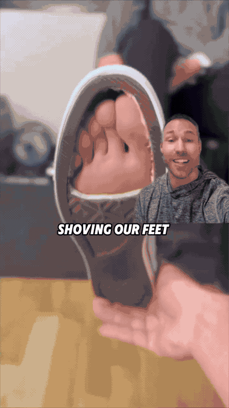
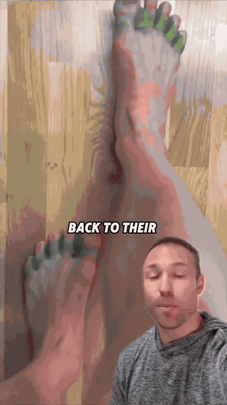
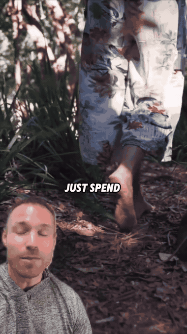
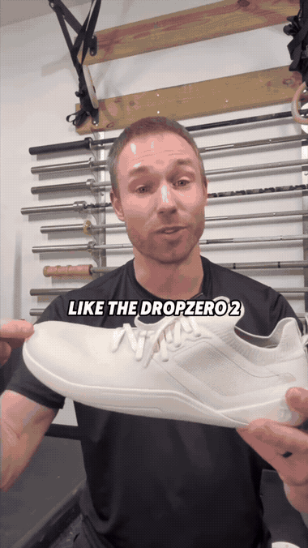

Spread your toes wide across the ground and press the ball of each toe down. This wakes up the transverse arch by building grip through the forefoot.

Pull the ball of the foot back toward the heel to raise the arch — without lifting the toes off the ground. This builds the longitudinal arch and is the base of every good squat setup.

Balancing on one foot with weight spread across the outer heel, ball of big toe, and small toes — the tripod — builds single-leg foot strength and ankle control.

Barefoot calf raise driving through the toes to finish, training lower-leg vertical power and foot-arch engagement at once. Comes back to the arch work you built in steps 1–2.